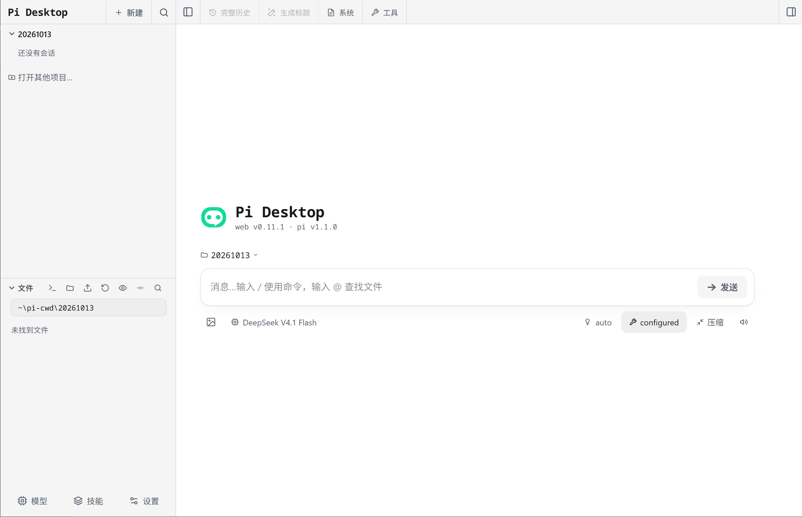
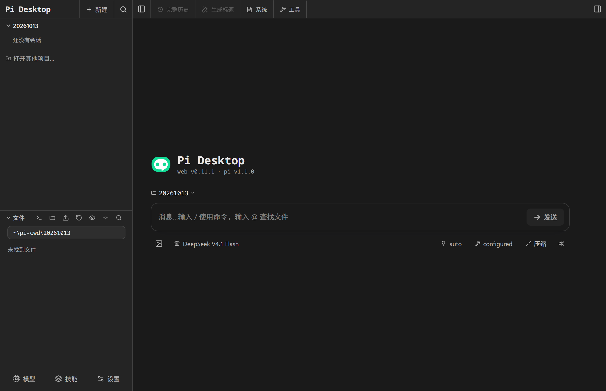

100% upstream Pi & Pi Web — zero upstream changes.
The Pi SDK and the Pi Web UI run unmodified; the shell only assembles them. This release ships zero required patches, so upstream improvements land without a fork to rebase.
Pi Desktop runs the upstream Pi Web UI — untouched — inside native shells for Windows, macOS, Linux and HarmonyOS. The Pi host and its Next.js server run inside the app itself, and the window loads that UI from the same origin: no cloud relay, no CORS, no login page, and no pi binary needed on your PATH. Your existing sessions, credentials and extensions come along.
Desktop v0.11.1 · packaged end-to-end verified on Windows; macOS & Linux pending
HarmonyOS(1) v0.11.1 · versionCode 1101 · built, signed and verified on device
Built on pi v1.1.0 + pi-web v0.11.1 · zero upstream changes · installers are unsigned
(1)Verified on a HUAWEI MateBook Pro (HAD-W32), HarmonyOS API 26; 2-in-1 and tablet.


Pi Desktop running the upstream Pi Web UI. Captured on Windows; the interface itself is Simplified Chinese.
$ why a native shell
The whole Pi experience — none of the browser tab.
The Pi SDK and the Pi Web UI run unmodified; the shell only assembles them. This release ships zero required patches, so upstream improvements land without a fork to rebase.
The Pi host and its Next.js server run inside the app's own main process — no sidecar, no orphaned Node processes — and the UI loads from that same origin. Nothing is relayed through the cloud, and there is no login page to paste a password into.
System tray, native notifications driven by tailing the session log, single-instance focus, a remembered window size and position, and external links handed to your system browser.
pi CLI environment.Defaults to ~/.pi/agent, so sessions, credentials, extensions and MCP configuration are the same ones your terminal already uses. Switch to an app-private directory in settings when you want isolation.
$ choose your desktop
pi-dist.tar.gz, extracted into userData on first launch and skipped afterwards (SHA-256 marker).HAD-W32), HarmonyOS API 26.0.0.0.0 and the window connects over the LAN IP, since HarmonyOS isolates loopback the other way.git, no ripgrep or fd binaries, plugin installs are local-source only.Together, both editions cover four desktop platforms — Windows, Linux and macOS (Electron) plus HarmonyOS. Two independent, unofficial open-source shells built on Pi and Pi Web with zero upstream changes; not affiliated with, or endorsed by, the Pi or Pi Web authors. Nothing is code-signed yet, so expect a SmartScreen prompt on Windows and Gatekeeper on macOS.
$ how it works
The shell starts pi-web's Next.js server inside the Electron main process.
The window loads http://127.0.0.1:<port>/ from that very server.
The standard Pi Web UI drives it: fetch('/api/*') up, SSE down.
No CORS · No custom protocol · No login page · Zero upstream changes.